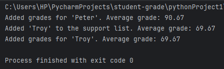

Fill up the name of the student in the drop box, after filling up the name, list down its grade in a comma seperated way.
You can also see the data in the terminal
Python Code:
import tkinter as tk
import: This keyword is used to import a module in Python.
tkinter: The name of the module being imported. It is the standard GUI toolkit for Python.
# Define a class to represent individual student records
class StudentRecord:
def __init__(self, student_name, average_grade):
self.student_name = student_name
self.average_grade = average_grade
self.next = None
"class StudentRecord:" This line starts the definition of a class named StudentRecord.
def __init__(self, student_name, average_grade):: This is the constructor method (__init__), which is called when an object of the class is created. It initializes the attributes of the class. In this case, the constructor takes two parameters (student_name and average_grade) and initializes the following attributes:
"self.student_name:" Represents the name of the student.
"self.average_grade:" Represents the average grade of the student.
"self.next:" This is a reference to another instance of the StudentRecord class. It is initialized to None. This suggests that this class is designed to be used in a linked list or a similar data structure where each instance can be linked to another.
The purpose of this class is to store information about a student, including their name, average grade, and potentially a reference to the next student record (linked list behavior). Instances of this class can be created to represent individual student records, and these instances can be linked together if needed.
class RecordStorage:
def __init__(self):
# List to store student grades
self.student_grades = []
# Linked list to store students needing support
self.support_list = None
def add_student_grade(self, add_student_name, student_grades):
# Calculate the average grade
average_grade = round(sum(student_grades) / len(student_grades), 2)
# Add the student and their average grade to the list
self.student_grades.append({'student_name': add_student_name,
'grades': student_grades,
'average_grade': average_grade})
# Check if the student needs additional support (arbitrary threshold for demonstration)
if average_grade <= 75:
self.add_to_support_list(add_student_name, average_grade)
print(f"Added grades for '{add_student_name}'. Average grade: {average_grade}")
def add_to_support_list(self, support_this_student, average_grade):
if self.support_list is None:
self.support_list = StudentRecord(support_this_student, average_grade)
else:
current = self.support_list
while current.next:
current = current.next
current.next = StudentRecord(support_this_student, average_grade)
print(f"Added '{support_this_student}' to the support list. Average grade: {average_grade}")
def compute_grade(self):
# Calculate overall statistics
all_grades = [grade['average_grade'] for grade in self.student_grades]
mean_grade = round(sum(all_grades) / len(all_grades), 2)
median_grade = sorted(all_grades)[len(all_grades) // 2] if len(all_grades) % 2 != 0 else (
sorted(all_grades)[len(all_grades) // 2 - 1] + sorted(all_grades)[len(all_grades) // 2]) / 2
# Display overall statistics
print(f"\nOverall Statistics:")
print(f"Mean Grade: {mean_grade}")
print(f"Median Grade: {median_grade}")
# Display students who need support
print("\nStudents Needing Support:")
print("-------------------------")
current = self.support_list
while current:
print(f"{current.student_name}: Average Grade {current.average_grade}")
current = current.next
Initialization (__init__) Method: Initializes an empty list student_grades to store student grades. Initializes support_list to None, representing the head of the linked list for students needing support.
add_student_grade Method: Calculates the average grade for a student based on the grades provided. Adds the student's information (name, grades, and average grade) to student_grades. Checks if the student needs additional support based on an arbitrary threshold (average grade <= 75). Calls add_to_support_list if additional support is needed.
add_to_support_list Method: Adds a student to the linked list support_list if it's the first entry. If the linked list already has entries, it traverses the list to find the end and adds a new StudentRecord node.
compute_grade Method: Computes overall statistics for all students, including mean and median grades. Displays overall statistics. Displays a list of students needing support along with their average grades.
# Define a GUI class for interacting with the RecordStorage
class RecordStorageGUI(tk.Tk):
def __init__(self):
super().__init__()
# Create an instance of RecordStorage to manage student records
self.record_storage = RecordStorage()
self.title("Student Record Storage")
self.geometry("400x200")
# Set up GUI elements
self.create_widgets()
def create_widgets(self):
# Entry for student name
self.label_name = tk.Label(self, text="Student Name:")
self.label_name.pack()
self.entry_name = tk.Entry(self)
self.entry_name.pack()
# Entry for grades
self.label_grades = tk.Label(self, text="Grades (comma-separated):")
self.label_grades.pack()
self.entry_grades = tk.Entry(self)
self.entry_grades.pack()
# Button to add student
self.add_button = tk.Button(self, text="Add Student", command=self.add_student)
self.add_button.pack()
# Quit button
self.quit_button = tk.Button(self, text="Quit", command=self.quit)
self.quit_button.pack()
# Display entered student information using a Listbox
self.students_listbox = tk.Listbox(self, width=50, height=10)
self.students_listbox.pack()
self.label_support = tk.Label(self, text="Students Needing Support:")
self.label_support.pack()
# Display students needing support using another Listbox
self.support_listbox = tk.Listbox(self, width=50, height=5)
self.support_listbox.pack()
def add_student(self):
student_name = self.entry_name.get()
grades_input = self.entry_grades.get()
try:
grades = [float(grade) for grade in grades_input.split(',')]
self.record_storage.add_student_grade(student_name, grades)
# Clear the Listbox and re-populate it with all entered student information
self.students_listbox.delete(0, tk.END)
for student_info in self.record_storage.student_grades:
self.students_listbox.insert(tk.END,
f"Student: {student_info['student_name']}, Average Grade: {student_info['average_grade']}")
# Clear the support Listbox and re-populate it with students needing support
self.support_listbox.delete(0, tk.END)
current = self.record_storage.support_list
while current:
self.support_listbox.insert(tk.END,
f"Student: {current.student_name}, Average Grade: {current.average_grade}")
current = current.next
except ValueError:
print("Invalid input. Please enter numerical grades separated by commas.")
# Clear the entry fields after adding a student
self.entry_name.delete(0, tk.END)
self.entry_grades.delete(0, tk.END)
Initialization (__init__) Method: Creates an instance of RecordStorage named record_storage to manage student records. Configures the main window's title and geometry. Calls create_widgets method to set up GUI elements.
create_widgets Method: Creates various GUI elements such as labels, entry fields, buttons, and Listboxes. These elements are used for entering student information, displaying entered student information, and showing students needing support.
add_student Method: Retrieves student name and grades from entry fields. Attempts to convert grades input to a list of floating-point numbers. Calls add_student_grade method of the RecordStorage instance to add the student record. Updates Listboxes to display entered student information and students needing support. Clears entry fields after adding a student. Catches ValueError if the grades input is not a valid list of numbers.
This GUI allows users to enter student information (name and grades), add students to the RecordStorage, and view the entered information along with a list of students needing support. The GUI is built on the Tkinter framework and includes labels, entry fields, buttons, and Listboxes for user interaction.
if __name__ == "__main__":
app = RecordStorageGUI()
app.mainloop()
if __name__ == "__main__":: This is a common Python idiom. It checks whether the script is being run as the main program (not imported as a module). If true, the code block underneath is executed. app = RecordStorageGUI(): Creates an instance of the RecordStorageGUI class, initializing the GUI and setting up the interface. app.mainloop(): This method starts the Tkinter event loop. The event loop is responsible for handling user inputs, such as button clicks and other events, and updating the GUI accordingly. It keeps the GUI running until the user closes the application.